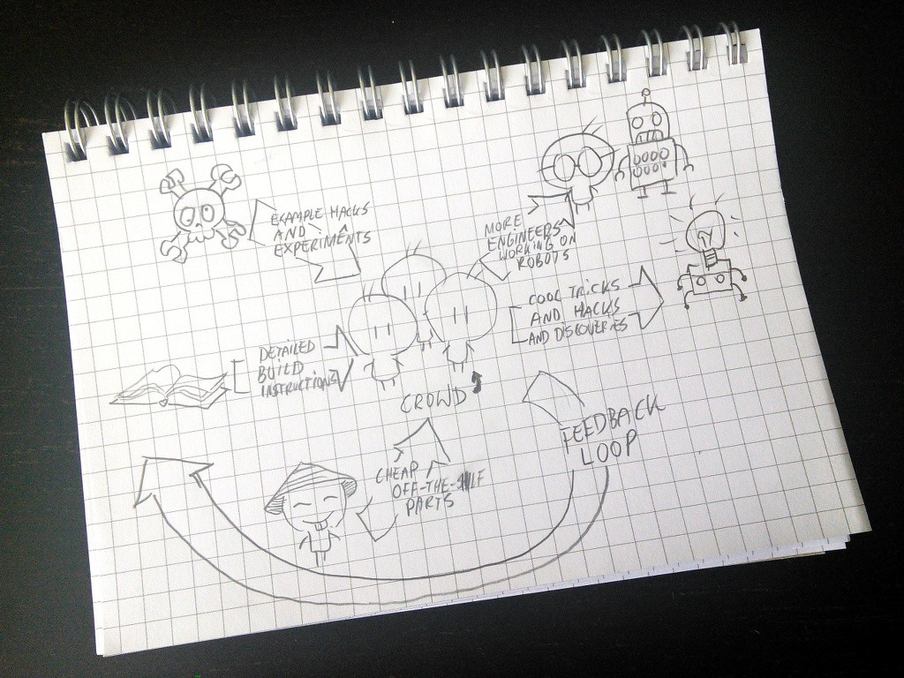

System Diagram¶
Published on 2015-08-14 in Tote.
This is the diagram of my plan to improve the worldwide robot situation:
I couldn’t find a napkin, so instead I sketched it on a block of paper. Anyways, there are three “input” components. First are the detailed build instructions for the robot, that account for most of the hurdles and traps waiting for a beginner roboticist. I’m working on them at http://tote.rtfd.org and I keep improving them. Then there are the example experiments and hacks that I publish here at Hackaday.io, that are supposed to inspire and get people started. And finally we also need a source of affordable parts, that part is mostly covered by China, but on our side I need to test and document them too. The expected results are also three-fold. First, we will see an increase in people who want to work on robots professionally and make it their career choice. Second, if enough people are experimenting with this, there are bound to pop up some discoveries on how to build use those robots. Finally, part of the energy will come back and improve the project itself, making it even more effective at those goals.